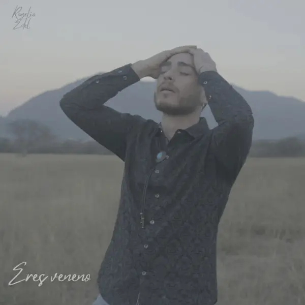

Music Producer · Jazztone Studios (opens in a new tab)
Produce and arrange for independent artists across Latin jazz and pop; compose for film and advertising.
Luis Guinea
Creative × Analytical × Entrepreneurial
Music producer and A&R for 10+ years. I design and build AI and automation systems for real business operations, work with data, and write about how artists grow.
Listen to my music Explore my background Book a Meeting (opens in a new tab)

01 / Background
01.1 / Explore the work
Real-time transaction pipeline and automated reporting for Grupo Botanas (Python, SQL, AWS EC2); artist monitoring on the Chartmetric API at Peermusic, with automated streaming and airplay reports.
Argos, my multi-agent orchestrator run from Telegram, dispatches work to Claude, Codex and Gemini. Custom agents and Claude skills with business context; LedgerApp connected to AI assistants through MCP; AI-produced visuals for El Remedio and Santo Chilaquil. El Remedio: identity, AI photography and landing page ↗ (opens in a new tab)
Co-founded Santo Chilaquil; founded Moctezuma Music Group; built Dispra, my own digital signage platform; A&R at Tipazo Music Group.
Brand identity and AI creative direction for El Remedio and Santo Chilaquil; music direction for an 11-piece ensemble.
01.2 / Experience
Produce and arrange for independent artists across Latin jazz and pop; compose for film and advertising.
Developed brand and launch strategy, AI-produced visuals, social content, Meta Ads campaigns, CRM and automated promotional workflows; produced and organised cultural events.
Managed derivative-work licensing approvals, DISCO catalogue administration, and Python and SQL analysis; built Chartmetric API monitoring with automated streaming and airplay reports.
Develop IT, data and AI systems: LedgerApp, connected to AI assistants through MCP; a real-time transaction pipeline on AWS EC2 with automated reporting; Dispra, my own digital signage platform, deployed at Grupo Botanas; POS and QR menus; social and NFC workflows.
01.3 / Education
01.4 / Skills
Research & writing: data journalism, case studies, source verification.
Data & technology: Python, SQL, REST APIs and ETL pipelines; Chartmetric, Power BI, Tableau, Excel and Google Analytics; AWS (EC2), Next.js and Supabase.
AI & automation: multi-agent orchestration across Claude, Codex and Gemini; custom agents and Claude skills; MCP; prompt and context design; AI image generation from brand systems.
Music: production, composition, arrangement, music direction.
Multi-instrumentalist: piano, keyboards and synthesizers; drums and percussion; guitar and bass; flute, accordion and trumpet.
Music & visual software: Pro Tools, Logic Pro X, Ableton Live, Sibelius, Final Cut Pro, Photoshop, Illustrator.
Industry & business: A&R, artist development, release planning, licensing, royalties, brand strategy and CRM.
02 / Music
Luis Guinea
Artist · 2020

Alexander Acha
Co-writer · 2024

Rogelio Edel
Producer · 2024
03 / Writing & Research
Research on artist growth, catalogues and the economics of attention, published in English and Spanish.
01 / FIELD NOTE
Tracking a likely AI-generated catalogue to examine attention, volume and the royalty pool.
Read the research ↗ (opens in a new tab)02 / CORRELATION
Follower growth strongly predicted persistence across 19 emerging artists; listener spikes did not.
r = 0.77Medium ↗ (opens in a new tab)
03 / CASE STUDY
A daily study of the path from a viral moment to a durable fan base.
559 → 332KMedium ↗ (opens in a new tab)
04 / INDUSTRY
A study with Chartmetric data on reach versus intent after a collaboration with Hens.
+1,128% monthly listenersMedium ↗ (opens in a new tab)
05 / SERIES, PART 1
Twelve months of platform data set against a public timeline, without claiming simple causality.
12 months of dataMedium ↗ (opens in a new tab)
05 / Contact